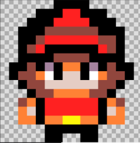
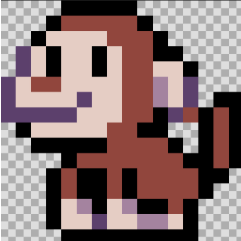
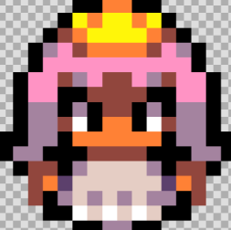
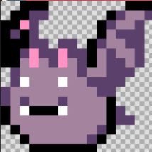
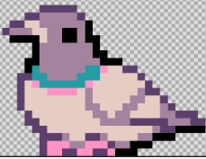
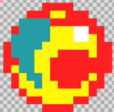
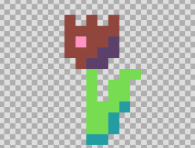
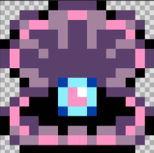

| Izena | Argazkia | Azalpena |
|---|---|---|
| Samurai |  |
Samuraia Pertsonai nagusia da, eta kontrol botoiekin mugitzen da.Player motako jokalaria da. |
| Tximua |  |
Tximino izeneko etsaiak Samuraiari ikutzea eta bizitzak kentzea du helburu. |
| Printzesa | Printzesak izeneko etsaiak Samuraiari ikutzea eta bizitzak kentzea du helburu. | |
| Printzesa2 |  |
Printzesa 2k izeneko etsaiak Samuraiari ikutzea eta bizitzak kentzea du helburu. |
| saguzaharra |  |
Saguzaharra izeneko etsaia sagu motako etsai bat da kind berri hau sortu det status bar bat izango du.Bere helburua Pertsonai nagusia hiltzea da nigarren mapan. |
| usoa |  |
Usoa izeneko etsai bat sortu det uso izeneko motakoa. Bere helburua Perysonai nagusiari bizitzak kentzea da. |
| gema |  |
Gema izeneko objetua food motako objetu da, bere helburua Pertsonai nagusiari puntuak ematea da, jokalariak partida irabazi ahal izateko.Gainera gema hau nik sortu det. |
| lorea |  |
Rosa izeneko objetua booster motako objetu bat da honek bizitza bat emango dio pertsonai nagusiari, horrela jokalariak bizitzeko eta jolasa pasatzeko aukera gehiago izango ditu |
| kontxa |  |
Kontxa izeneko objetua food motako objetua da, bere helburua bigarren mapan bizitzak ematea da pertsonai nagusiari. |